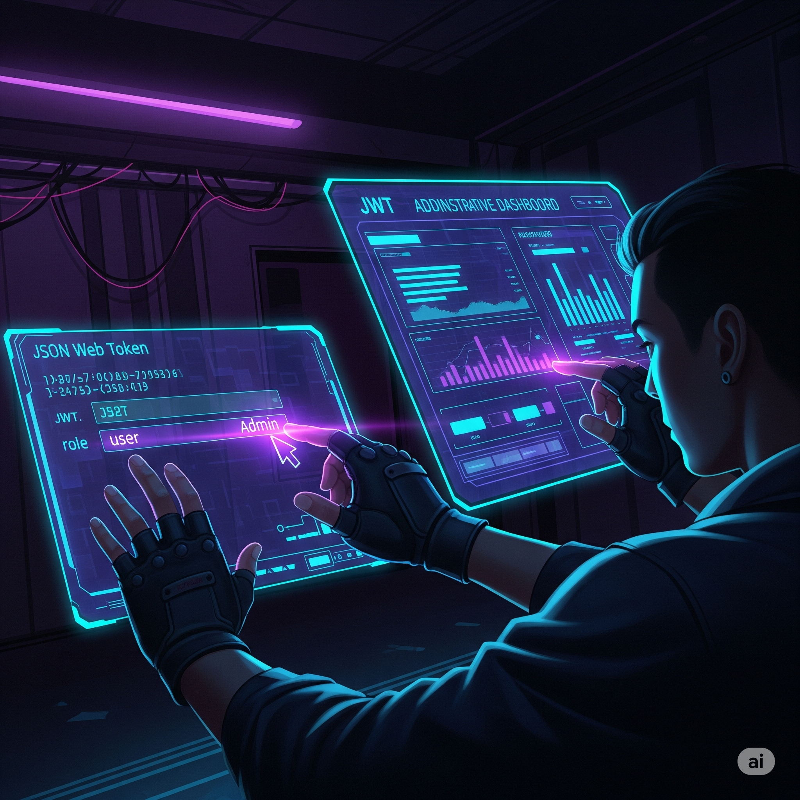
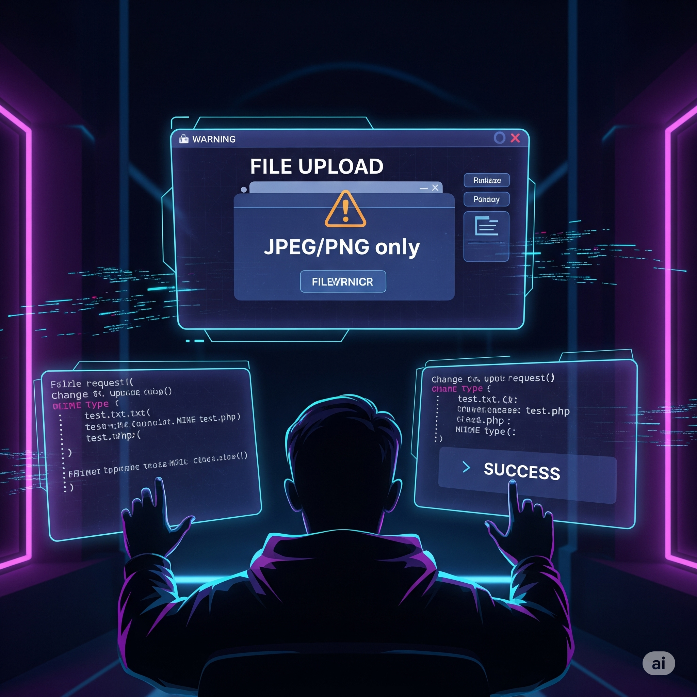

Hoş geldiniz, yeni bir sızma testi projesine başlıyorsunuz. Hedefiniz, bir e-ticaret web uygulamasında yaygın zafiyetleri (IDOR, yetki atlama, dosya yükleme bypass) zincirleme bir şekilde keşfetmek ve raporlamak. Göreviniz: Uygulama üzerindeki potansiyel güvenlik açıklarını bulmak ve kanıtlamak, ancak üretim ortamına zarar vermeden ve etik sınırlar içinde kalmak. Kararlarınız, hem projenin başarısını hem de şirketin güvenliğini doğrudan etkileyecek!
Simülasyon Rolünüz
Sizin Rolünüz: Sızma Testi Uzmanı Verilen web uygulamasında zafiyet bulmak ve bunları etik sınırlar içinde kanıtlamakla sorumlusunuz.
Hedef: E-ticaret Web Uygulaması Giriş, profil, sipariş takibi ve dosya yükleme gibi modülleri olan bir uygulama.
Temel Metrikler
Veri Bütünlüğü Veri sızıntısı veya hasar riski. (Başlangıç: %100)
Ağ Performansı Uygulamanın çalışmasına verilen zarar. (Başlangıç: %100)
İtibar Puanı Güvenlik ekibinin profesyonelliği ve etik duruşu. (Başlangıç: 100)
Finansal Etki Onarım ve ceza maliyetleri. (Başlangıç: ₺0)
Veri Bütünlüğü
100%
Ağ Performansı
100%
İtibar Puanı
100
Finansal Etki
₺0
Kalan Süre
10:00
Faz 1: Pasif Keşif (Recon)
Hedef: E-ticaret Uygulaması
Sızma testinizin ilk aşaması olan pasif keşif ile başlıyorsunuz. Amacınız, hedefe doğrudan saldırmadan, uygulamanın dijital ayak izi hakkında mümkün olduğunca fazla bilgi toplamak. Bu, size sonraki adımlar için değerli ipuçları sağlayacaktır.
Etik sınırlar içinde kalmak için hangi keşif yöntemini tercih edeceksiniz?
Faz 2: Parametre Manipülasyonu / IDOR
Hedef: Yetkisiz Veri Erişimi
Pasif keşif sonucunda, uygulamanın sipariş takibi bölümünde ?orderid=12345 gibi parametreler kullandığını fark ettiniz. Bu, potansiyel bir IDOR (Insecure Direct Object Reference) zafiyetine işaret ediyor. Amacınız, başka bir kullanıcıya ait bir sipariş kaydını görüntüleyebildiğinizi kanıtlamak.
IDOR zafiyetini nasıl kanıtlayacaksınız?
Faz 3: Oturum / JWT Zayıflığı
Hedef: Rol Yükseltme
Uygulamanın, oturum yönetimi için JWT (JSON Web Token) kullandığını tespit ettiniz. Token'ın içeriğini incelediğinizde, `role` adında bir alan olduğunu gördünüz. Güvenli olmayan bir token yenileme mekanizması bulursanız, yetkisiz bir şekilde rolünüzü yükseltebilirsiniz.

JWT zafiyetini kullanarak nasıl yetki atlamayı deneyeceksiniz?
Faz 4: Yetki Atlama (PrivEsc)
Hedef: Yönetici Fonksiyonlarını Keşfetmek
Daha önceki keşif aşamalarında, uygulamanın '/api/admin/...' gibi bir yönetici endpoint'i kullandığını öğrendiniz. Normal bir kullanıcı olarak bu endpoint'e erişmeye çalıştığınızda, '403 Forbidden' hatası alıyorsunuz. Amacınız, yetkisiz bir şekilde yönetici paneline erişip erişemeyeceğinizi veya hassas bilgileri okuyup okuyamayacağınızı kanıtlamak.
Yetki atlama zafiyetini nasıl kanıtlayacaksınız?
Faz 5: Dosya Yükleme Bypass
Hedef: Uzak Kod Çalıştırma (RCE) için Hazırlık
Uygulamanın profil fotoğrafı yükleme özelliği, sadece JPEG ve PNG dosyalarına izin veriyor gibi görünüyor. Ancak, bu filtreleme mekanizmasının atlatılabileceğinden şüpheleniyorsunuz. Amacınız, bir dosya yükleme zafiyetini kullanarak, sisteme zararsız bir test dosyası yükleyebildiğinizi kanıtlamak.

Dosya yükleme filtresini nasıl atlatmaya çalışacaksınız?
Faz 6: Minimal RCE PoC (Zararsız)
Hedef: Uzak Kod Çalıştırma (RCE) Kanıtı
Önceki aşamada dosya yükleme zafiyetini başarıyla kanıtladınız. Şimdi, bir Uzak Kod Çalıştırma (RCE) zafiyetinin varlığını **etik ve zararsız bir şekilde** kanıtlamanız gerekiyor. Amacınız, sisteme zarar vermeden, komut çalıştırma yeteneğinizin olduğunu göstermek.
RCE zafiyetini etik sınırlar içinde nasıl kanıtlayacaksınız?
Faz 7: Rapor ve Sertleştirme
Hedef: Etkili Raporlama ve İyileştirme
Tüm zafiyetleri zincirleme bir şekilde buldunuz ve etik sınırlar içinde kanıtladınız. Şimdi, projenin en önemli aşaması olan raporlamayı yapmanız gerekiyor. Amacınız, bulgularınızı yöneticilere ve geliştiricilere net bir şekilde iletmek ve sistemin güvenliğini kalıcı olarak artıracak önerilerde bulunmak.
Projenizi tamamlamak için nasıl bir raporlama stratejisi izleyeceksiniz?